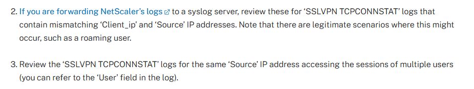
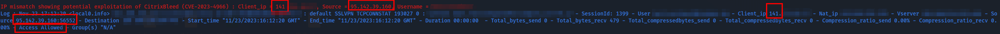

Introduction
At the end of November 2023, I conducted a Forensic analysis in an environment which was completely encrypted by the Lockbit 3.0 ransomware. During the investigation, it was quickly possible to identify that Citrix components were the sources of most of the attacks. As many different sources report that Lockbit 3.0 likes to take advantage of the Citrix Bleed vulnerability (CVE 2023-4966), I decided to check whether it could be behind the attack, given that a Citrix NetScaler was facing the internet in the environment.
How does Citrix Bleed work?
As Assetnote’s excellent article points out , the Citrix Bleed vulnerability occurs when sending a sufficiently long payload in the HTTP Host header to the vulnerable NetScaler instance. In this case, the server would respond with memory leaks including valid user cookies. Example from Assetnote:
GET /oauth/idp/.well-known/openid-configuration HTTP/1.1
Host: a <repeated 24812 times>
Connection: close
We can then see in the server response data that looks like user cookies.
HTTP/1.1 200 OK
X-Content-Type-Options: nosniff
X-XSS-Protection: 1; mode=block
Content-Length: 147441
Cache-control: no-cache, no-store, must-revalidate
Pragma: no-cache
Content-Type: application/json; charset=utf-8
X-Citrix-Application: Receiver for Web
{"issuer": "https://aaaaa ...<omitted>... aaaaaaaaaaaaaaaaí§¡
ð
í§¡-ª¼tÙÌåDx013.1.48.47à
d98cd79972b2637450836d4009793b100c3a01f2245525d5f4f58455e445a4a42HTTP/1.1 200 OK
Content-Length: @@@@@
Encode:@@@
Cache-control: no-cache
Pragma: no-cache
Content-Type: text/html
Set-Cookie: NSC_AAAC=@@@@@@@@@@@@@@@@@@@@@@@@@@@@@@@@@@@@@@@@@@@@@@@@@@@@@@@@@@@@@@@@@;Secure;HttpOnly;Path=/
{"categories":[],"resources":[],"subscriptionsEnabled":false,"username":null}
ð
å
å
PÏÏ
H¡
éÒÏ
eGÁ"RDEFAULT
ò #pack200-gzip
compressdeflategzip
dentity
þÿÿÿÿÿ
©VPN_GLOBALÿÿÿÿÿÿ è"AAA_PARAMí
Here is the cookie d98cd79972b2637450836d4009793b100c3a01f2245525d5f4f58455e445a4a42.
Using this valid cookie, attackers can bypass password and MFA requirements, enabling them to take control of legitimate user sessions in the Citrix environment.
Impacted NetScaler versions
The following versions of NetScaler ADC and Gateway are vulnerable:
- NetScaler ADC and NetScaler Gateway 14.1 before 14.1-8.50
- NetScaler ADC and NetScaler Gateway 13.1 before 13.1-49.15
- NetScaler ADC and NetScaler Gateway 13.0 before 13.0-92.19
- NetScaler ADC and NetScaler Gateway version 12.1 (EOL)
- NetScaler ADC 13.1FIPS before 13.1-37.163
- NetScaler ADC 12.1-FIPS before 12.1-55.300
- NetScaler ADC 12.1-NDcPP before 12.1-55.300
In the case of my analysis, the NetScaler appliance was indeed running a vulnerable version.
How to validate whether the appliance has been compromised?
I first started by trying to hunt for known IoCs for this attack on the vulnerable NetScaler.
In this case, no indicators of compromise were found. This may be explained by the fact that known IoCs were reported a long time ago, and that threat actors like to change their techniques and infrastructures to complicate the task of analysts.
However, while examining the various resources available concerning known IoCs for this exploit, I came across this information from Citrix itself. 
They report that in the NetScaler authentication logs of a compromised appliance, the value of the Client_Ip field may differ from the Source field.
According to observations by Mandiant’s CSIRT team and myself, the Client_Ip field corresponds to the IP address used for the original legitimate connection (i.e. the connection that generated the legitimate cookie), while the Source field actually indicates the IP from which the actual connection originated. This means two things, a user log showing a mismatch between the Source and the Client_Ip might either indicate a user who traveled and is working from a different location as when he generated his cookie or a hacked user.
Analysis
From my previous Incident Response cases involving Citrix and the NetScaler component, I knew that the authentication logs were located in /var/log/ns.log*.
In order to be able to identify differences between Sources and Client_Ip, I decided to create a Python script to analyze the logs, extract all Client_Ip and Source values and then compare them to show any mismatch.
import glob
import re
from colorama import init, Fore
init(autoreset=True)
def extract_ips(log):
client_ip_match = re.search(r'Client_ip (\d+\.\d+\.\d+\.\d+)', log)
source_ip_match = re.search(r'Source (\d+\.\d+\.\d+\.\d+)', log)
username_match = re.search(r'Context ([\w.]+)@', log)
client_ip = client_ip_match.group(1) if client_ip_match else None
source_ip = source_ip_match.group(1) if source_ip_match else None
username = username_match.group(1) if username_match else None
return client_ip, source_ip, username
path = input("Enter ns.log path. (Usually /var/log) : ")
files_to_open = glob.glob(path + "/ns.log*")
files_content = ""
for files in files_to_open:
with open(files, 'r') as file:
content = file.read()
files_content += content
logs = files_content.splitlines()
for log in logs:
client_ip, source_ip, username = extract_ips(log)
if client_ip and source_ip:
if client_ip != source_ip:
print(Fore.RED + f"IP mismatch showing potential exploitation of CitrixBleed (CVE-2023-4966) : Client_ip = {client_ip}, Source = {source_ip}, Username = {username}")
print(Fore.BLUE + f"Log : {log}\n")
This script will go through the folder that you provide as an argument with the purpose of finding ns.log files inside it. Once these files are found, it will parse them to extract the Source and Client_Ip fields values as well as the username for every single log found, to identify the Patient Zero user. Once donce, it will display any mismatch found and the impacted user.
Results
By running this script in the context of the environment, I was quickly to find several mismatches showing connections from Russia, the USA and the Netherlands from the same user during the same evening, just before the attack began.
In this case, it was not possible for the user to be, in the same evening, in all these countries.
Here’s a small sample of what was found: 
There, while the Client_Ip was the main public IP of the environment, the Source IP address was linked to Russia, which is not legitimate given the context of the infrastructure and the user.
Further analysis of the user’s actions revealed malicious activity on his account mostly coming from the russian IP address.